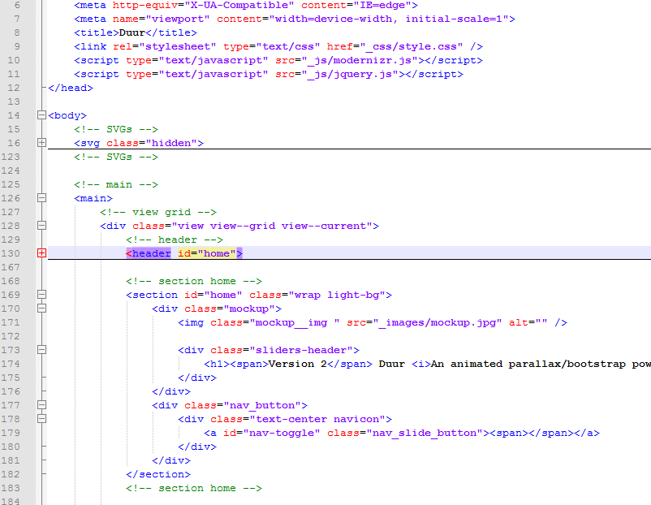
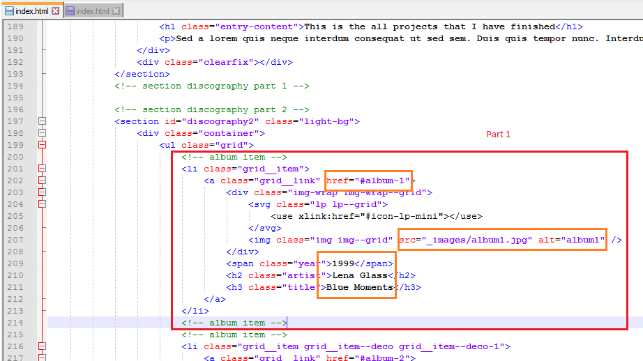
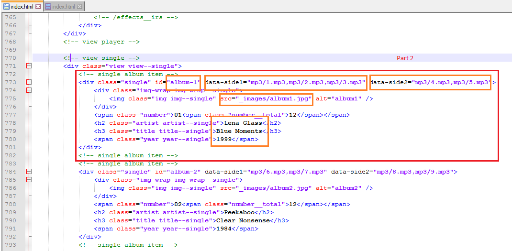
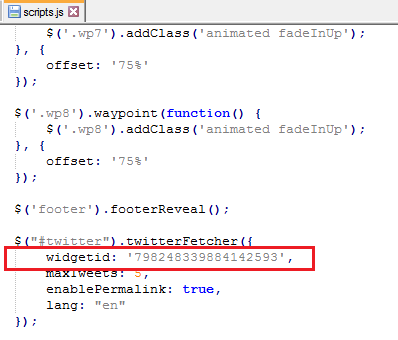
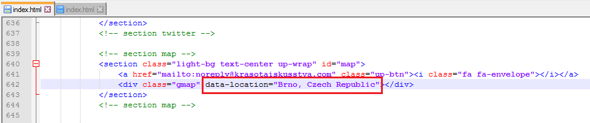

“Duur” Documentation by “Krasota Iskusstva” v1.0
“Duur | An animated parallax HTML5 template”
Created: 21/11/2016
By: Moskva Yigit
Thank you for purchasing my theme. If you have any questions that are beyond the scope of this help file, please feel free to email via my user page contact form. Thanks so much!
Table of Contents
- HTML Structure
- CSS Files and Structure
- Settings
- JavaScript
- Sources and Credits
A) HTML Structure - top
This theme is a responsive layout with 12 columns (Bootstrap CSS). All of the information within the main content area is nested within a div < main > . Inside of any "row" class, you can use 1 - 12 colums. (col-lg-1, col-lg-5, col-lg-12)

B) CSS Files and Structure - top
I'm using 4 CSS files in this theme connected to main (style.css) file.
- animate.css > Animate for Waypoints
- bootstrap.css > Responsive layout and main contents such as buttons, navigations, etc.
- fonts.css > Fonts
- style.css > Main CSS code files. You will need to use this file mostly to perform the changes
The main file (style.css) contains all of the specific stylings for the page. The file is separated into sections using:
/*----------------------------
.-- Imports
-----------------------------*/
some code
/*----------------------------
.-- Resets
-----------------------------*/
some code
/*----------------------------
.-- General
-----------------------------*/
some code
/*----------------------------
.-- Navigation
-----------------------------*/
some code
etc, etc.
If you would like to edit a specific section of the site, simply find the appropriate label in the CSS file, and then scroll down until you find the appropriate style that needs to be edited.
C) JavaScript - top
This theme imports 4 Javascript files.
- scripts.js
Some settings for the jQuery. No need to edit.
- jquery.js
Classic old jQuery File
- modernizr.js
Modernizr
- compressed.js
All the jQuery codes are compressed and located here.
D) Settings - top
. Albums
- 1- The theme has more than one part that you need to modify / change your content for the albums those are listed on the main page

- 2 - You need to modify this part as well for the same album. You can add mp3 files as much as you need . See from the data-side1 and data-side2. Data-side1 is the front side on the player

. Twitter

. Gmap

- Open the index.html and find gmap data location. Replace the address with yours.
E) Sources and Credits - top
I've used the following images, icons or other files as listed.
- Bootstrap - http://getbootstrap.com/
- jQuery JavaScript Library - http://jquery.com/
- HTML5 Shiv - https://github.com/aFarkas/html5shiv/
- Modernizr - http://modernizr.com/
- Classie - https://github.com/ded/bonzo/
- Footer Reveal - https://github.com/IainAndrew/
- gMap - http://github.com/marioestrada/jQuery-gMap/
- Justified Gallery - http://miromannino.github.io/Justified-Gallery/
- Masonry - http://masonry.desandro.com/
- Waypoints - https://github.com/imakewebthings/waypoints/
- Font Awesome - http://fontawesome.io/
- Animate.CSS - http://daneden.me/animate/
- Icons http://www.entypo.com/ and https://icomoon.io/
Once again, thank you so much for purchasing this theme. As I said at the beginning, I'd be glad to help you if you have any questions relating to this theme. No guarantees, but I'll do my best to assist. If you have a more general question relating to the themes, you might consider visiting the forums and asking your question in the "Item Discussion" section.
Moskva Yigit
Go To Table of Contents